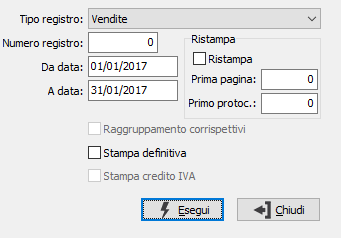
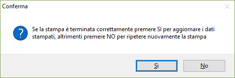

Stampa registri IVA per aziende semplificate
Il programma effettua la stampa, di prova o definitiva, dei registri Iva per aziende che operano con regime semplificato. La stampa di prova può essere effettuata più volte, mentre la stampa definitiva una sola volta. La stampa di prova non segnala eventuali incoerenza data/numero di protocollo, per cui si consiglia di eseguire previamente l’apposito programma.
Se in configurazione contabilità generale è impostato il flag che consente la ristampa dei registri, sarà presente un riquadro per impostare il flag di ristampa, il numero della prima pagina da stampare e del primo protocollo.

TIPO REGISTRO: combo box per definire il tipo di registro Iva da stampare. Valori ammessi:
Vendite
Acquisti
Corrispettivi
NUMERO REGISTRO: indicare il numero di serie del sezionale Iva che si intende stampare.
DA DATA: indicare la data dalla quale deve iniziare la scansione della tabella delle registrazioni Iva. Viene proposta automaticamente la data immediatamente successiva a quella dell’ultima stampa definitiva. In caso di stampa definitiva, si consiglia vivamente di non modificare la data proposta automaticamente, per evitare possibili “omissioni” di stampa fatture.
A DATA: indicare la data alla quale deve terminare la scansione della tabella delle registrazioni Iva.
RAGGRUPPAMENTO CORRISPETTIVI: check box abilitato solo in caso di stampa registro Corrispettivi. In talune versioni che contemplano la vendita per corrispondenza, ciascun incasso postale esegue una registrazione Iva. Esistono quindi più registrazioni con la stessa data. È quindi possibile effettuare sia stampe di prova analitiche, sia stampe di prova o definitive sintetiche (con un solo totale per giorno) come previsto dalla normativa. Valori ammessi:
vuoto: effettua la stampa analitica
spunta: effettua la stampa sintetica raggruppata
STAMPA DEFINITIVA check box per definire il tipo di stampa che si vuole effettuare. Valori possibili:
vuoto = stampa di prova;
spunta = stampa definitiva.
STAMPA CREDITO IVA: check box abilitato solo in caso di stampa registro Acquisti; consente di stampare il credito Iva relativo al periodo precedente (casella con segno di spunta).
Inseriti tutti i parametri, la pressione del bottone Esegui determina l’esecuzione della stampa.

In caso di stampa definitiva, al termine della stampa viene visualizzato il messaggio illustrato a lato. Ciò per ovviare all’eventuale, anche se infrequente, evento di rottura di pagine o di mancato avanzamento della carta, soprattutto in caso di stampa tramite stampanti ad aghi.Se la stampa si è conclusa positivamente, è comunque ovviamente necessario confermare premendo il bottone OK.